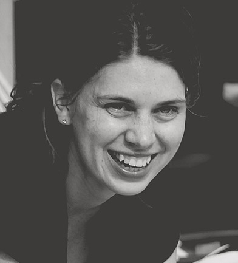

about
Hello! And welcome to Nordic Design.studio.
Nordic Design.studio is run by me, Sara Ojasoo.
I help people and small businesses create their dream brand and website.
I am a Graphic designer, Front End Developer and Web Designer.
I studied and have a candidate in Journalism. I have worked for over ten years as a Subeditor, Newspaper Designer and Managing Subeditor at Expressen, one of Swedens biggest newspapers.
I am also a mum to a little energetic two year old boy and a wife.
I grew up in Sweden on the country side. When I met my husband we decided to live our dreams and moved to the South of France when our son was just five months old.
So here I am. A swede married to a brit living in France.
